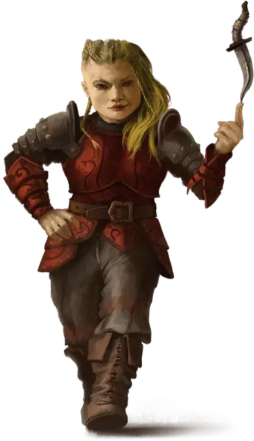

Амбициозный наёмный убийца
Ambitious Assassin
Маленький или Средний Гуманоид, нейтрально-злой

Класс Доспеха 16 (проклёпанный доспех)
Хиты 91 (14к8 + 28)
Скорость 40 футов, лазая 40 футов
| мод | спас | ||
|---|---|---|---|
| СИЛ | 10 | +0 | +0 |
| ЛОВ | 18 | +4 | +7 |
| ТЕЛ | 15 | +2 | +2 |
| мод | спас | ||
|---|---|---|---|
| ИНТ | 18 | +4 | +7 |
| МДР | 14 | +2 | +2 |
| ХАР | 16 | +3 | +3 |
Навыки Восприятие +5, Обман +9, Скрытность +10
Иммунитет к состояниям испуг, очарование
Чувства слепое зрение 10 футов, пассивное Восприятие 15
Языки Общий, Воровской жаргон, плюс один язык
Опасность 5 (1800 опыта)
Бонус мастерства +3
Особенности
Легендарное сопротивление (2/день). Если наёмный убийца проваливает спасбросок, он может вместо этого сделать спасбросок успешным.
Действия
Мультиатака. Наёмный убийца совершает две атаки Отравленным клинком.
Отравленный клинок. . Рукопашная или Дальнобойная атака оружием: +7 к попаданию, досягаемость 5 футов или дистанция 60 футов, одна цель. Попадание: 6 (1к4 + 4) колющего урона плюс 5 (1к10) урона ядом.
Реакции
Невероятное уклонение. Когда нападающий, которого наёмный убийца может видеть, попадает по нему атакой, он может реакцией уменьшить вдвое урон, причиняемый ему этой атакой.
Легендарные действия
Наёмный убийца может совершить 3 легендарных действия на выбор из перечисленных ниже вариантов. Лишь одно легендарное действие может быть совершено за один раз, и только в конце хода другого существа. Наёмный убийца восстанавливает истраченные действия в начале своего хода.
Ловкость. Наёмный убийца выпутывается из немагических пут и оканчивает на себе состояние схваченный, после чего перемещается на свою скорость, не провоцируя атак.
Ранение (стоит 2 действия). Наёмный убийца совершает одну атаку Отравленным клинком.
Побег с исчезновением (стоит 3 действия). Наёмный убийца создает неожиданное отвлекающее действие, такое как облако дезориентирующего дыма или вспышка ослепительного света, заполняющее 10-футовый куб в пределах 5 футов от наёмного убийцы. Каждое существо по выбору наёмного убийцы в этой области получает 9 (2к8) урона психической энергией, а наёмный убийца становится невидимым. Эта невидимость действует до конца следующего хода наёмного убийцы.
Логово
Этот наёмный убийца обитает в месте силы и безопасности, будь то скрытое здание гильдии воров или роскошный особняк. Логово наполнено хитроумными ловушками, которые дезориентируют, ослабляют и убивают незваных гостей.
ПО наёмного убийцы увеличивается до 6 (2,300 опыта), если столкновение происходит в его логове.
Действия логова
При значении инициативы «20» (проигрыш при ничьей), наёмный убийца может совершить действие в логове, чтобы создать один из следующих эффектов; он не может использовать один и тот же эффект два раунда подряд:
Отвлечение. Пронзительный звук наполняет логово. Существа, которые могут его слышать, должны преуспеть в спасброске Телосложения Сл 15, иначе их концентрация прерывается.
Западня. Скрытые ловушки нацеливаются на трёх существ, которых наёмный убийца может видеть в логове. Каждое существо должно преуспеть в спасброске Силы Сл 15, иначе станет схваченным (Сл высвобождения 15) и опутанным до тех пор, пока не высвободится или удерживающая его ловушка не будет уничтожена. Каждая ловушка имеет КД 11, 10 хитов и обладает иммунитетом к урону ядом и психической энергией.
Ловушки. Ловушки нацеливаются на двух существ, которых наёмный убийца может видеть в логове. Каждая цель должна преуспеть в спасброске Ловкости Сл 15, иначе попадёт в ловушку. Наёмный убийца бросает 3к6 и пораженные цели получают урон, равный общему выпавшему значению. Урон является дробящим, колющим, рубящим, уроном ядом или огнём, по выбору наёмного убийцы, когда он использует это действие.
Местные эффекты
Местность, в которой находится логово наёмного убийцы, искажается его присутствием, создавая один или несколько из следующих эффектов:
• Процветание коррупции. Находясь в пределах 3 миль от логова, существа, которые не являются членами организации наёмного убийцы с помехой совершают проверки характеристик, основанных на навыках Проницательности, Восприятия и Убеждения.
• Сильнодействующие токсины. Когда члены организации наёмного убийцы наносят урон ядом, находясь в пределах 3 миль от логова, они игнорируют сопротивление цели к урону ядом.
Если наёмный убийца умирает, эти эффекты исчезают в течение 1к10 дней.
Описание
Подходящий для партий 1-го этапа (уровни с 1 по 4), амбициозный ассасин — это Гуманоид, который может быть очаровательным манипулятором или безжалостным убийцей.